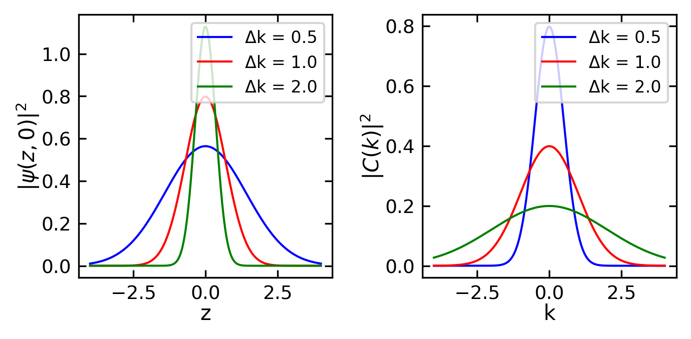
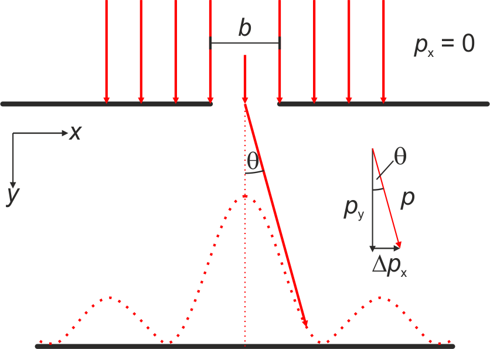
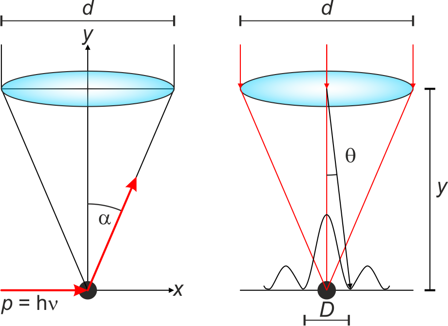
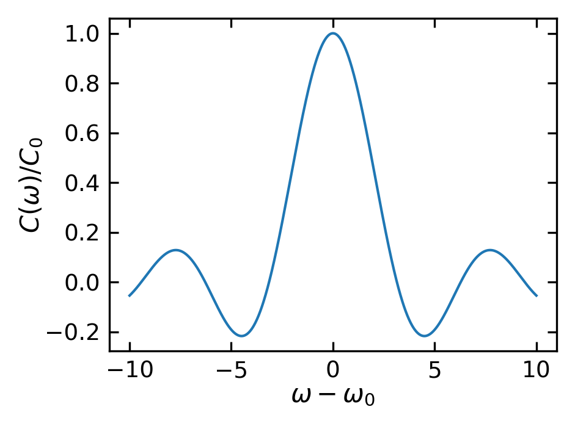

The uncertainty principle is one of the most fundamental and far-reaching principles in quantum mechanics. First proposed by Werner Heisenberg in 1927, it states that there is a fundamental limit to the precision with which complementary physical properties of a particle can be determined. The most well-known form of the uncertainty principle is the impossibility of simultaneously measuring both the position and momentum of a quantum particle with arbitrary precision. The more precisely one property is measured, the less precisely the other can be determined. This is not simply a limitation of measurement devices or techniques, but rather a fundamental property of quantum systems that arises from the wave-like nature of matter at the quantum scale.
Position-momentum uncertainty
We already discussed the wave nature of particles in the previous chapter. Now we want to examine the consequences of this wave nature on the precision of measuring the position and momentum of a particle. Let us consider a one-dimensional wave packet \(\psi \left( z,t \right)\), which is a superposition of plane waves with different wave numbers \(k\), and thus different momenta \(p = \hbar k\). The wave packet is constructed in such a way that it is localized in space and time. The wave packet is described by the amplitude distribution \(C \left( k \right)\), which is a function of the wave number \(k\),
Let us consider a wave packet with a Gaussian distribution in k-space:
\[
C \left( k \right) = C \left( k_0 \right) \, \mathrm{e}^{- \frac{\left( k-k_0\right)^2}{2 \Delta k^2}} \mathrm{.}
\]
The width of this distribution \(\Delta k\) can be found from the standard deviation where the results is obsviously \(\Delta k\).
z = np.linspace(-4, 4, 1000)k = np.linspace(-4, 4, 1000)delta_k_values = [0.5, 1.0, 2.0]colors = ['blue', 'red', 'green']fig, (ax1, ax2) = plt.subplots(1, 2, figsize=get_size(12,6))for dk, c inzip(delta_k_values, colors):# Position space distribution psi_z = np.sqrt(2*dk/np.pi) * np.exp(-dk**2* z**2) ax1.plot(z, psi_z, c, label=f'Δk = {dk}')# k-space distribution psi_k = np.exp(-(k-0)**2/(2*dk**2)) / np.sqrt(2*np.pi*dk**2) ax2.plot(k, psi_k, c, label=f'Δk = {dk}')ax1.set_xlabel('z')ax1.set_ylabel(r'$|\psi(z,0)|^2$')ax1.legend()ax2.set_xlabel('k')ax2.set_ylabel(r'$|C(k)|^2$')ax2.legend()plt.tight_layout()plt.show()

Figure 1— Probability density of a Gaussian wave packet at t=0 for different values of Δk (left) and their corresponding distributions in k-space (right)
The spatial uncertainty \(\Delta z\) can be calculated similarly from the standard deviation:
Now we can directly calculate the uncertainty product:
\[
\Delta z \cdot \Delta k = \frac{1}{2}
\]
Using \(\Delta p = \hbar \Delta k\), we can convert our uncertainty product from k-space to momentum space:
\[
\Delta z \cdot \Delta p = \Delta z \cdot \hbar \Delta k = \frac{\hbar}{2}
\]
This achieves exactly the minimum uncertainty product of \(\hbar/2\). In fact, it can be proven that for any wave packet:
\[
\Delta z \cdot \Delta p \ge \frac{\hbar}{2}
\]
This is the precise form of Heisenberg’s uncertainty principle. For other wave packet shapes, the uncertainty product will be larger, but can never be smaller than \(\hbar/2\).
For the other spatial dimensions, similar relations hold:
Different definitions of uncertainty (like full-width-at-half-maximum instead of standard deviation) will give slightly different numerical factors, but the fundamental \(\hbar\) scaling remains. For instance, using the width where the wave packet drops to \(1/e\) of its maximum gives \(\Delta z \cdot \Delta p = \hbar\), while using the distance between first zeros for a non-Gaussian packet gives \(\Delta z \cdot \Delta p = 2\pi\hbar = h\).
Thus, while the exact numerical factor in \(\Delta z \cdot \Delta p_z\) depends on how we define the uncertainties, the fundamental limit scaled by \(\hbar\) is a universal feature of quantum mechanics.
Example: Electron diffraction at a single slit
One illustrative example is provided on the basis of electron diffraction at a single slit. Let us assume a single slit parallel to the \(x\) axis with a width of \(\Delta x = b\) and an electron beam with the momentum \(\vec{p} = \left( 0,p_y,0 \right)^{\mathrm{T}}\). Before the electrons pass the slit their momentum along \(x\) is \(p_x = 0\), while we cannot provide any details about their \(x\) coordinate. At the slit only those electrons can pass whose \(x\) coordinate is in the interval between \(x = -b/2\) and \(x = +b/2\). Thus, for the transmitted electron we can constrain the space of possible \(x\) values down to \(\Delta x = b\) and in accord to the uncertainty relation the momentum along the \(x\) direction becomes \(\Delta p_x \ge \hbar / b\). As a consequence, after passing the slit the electrons are distributed about an angle \(-\theta \le \varphi \le + \theta\) with the condition
If we describe the electrons by means of the de Broglie wavelength \(\lambda = h/p = 2\pi\hbar/p\), then the wave is diffracted at the slit and we get a central maximum of the diffraction pattern with the width \(\Delta \varphi = 2 \theta\). Analogously to the diffraction of light we get
\[
\Delta x \cdot \Delta p_x = b \cdot \frac{h}{b} = h
\]

Scheme of an electron with a momentum uncertainty along \(x\) of \(\Delta p_x = 0\) and thus \(\Delta x = \infty\)before it enters the slit. Due to the localization through the slit (\(\Delta x\) becomes a finite number), the electron experiences an uncertainty of the momentum \(\Delta p_x > 0\).
Example: Uncertainty in a microscope
Another example can be constructed by considering the observation of a microscopic particle at rest via a microscope. To observe the particle, we must illuminate it with light of wavelength \(\lambda\), which scatters within the opening angle of the objective \(2\alpha\) (\(\sin(\alpha) \approx \tan(\alpha) = d/(2y)\), where \(d\) is the diameter of the objective and \(y\) is the particle-objective distance). The momentum of the scattered photon has an uncertainty along \(x\) given by:
Due to conservation of momentum, the particle that scattered the photon (and received momentum from this interaction) has the same uncertainty \(\Delta p_x\). Furthermore, when parallel light is focused by an objective, diffraction at the objective’s edge creates a diffraction pattern in the focal plane. The central intensity maximum (0th order diffraction peak) has a diameter of:
\[
1.22\lambda = \frac{d}{2y}D
\]
As discussed in the lecture on diffraction and the Airy disk, we cannot determine the particle’s position more precisely than \(\Delta x = D\) (the diameter of the Airy disk). Combining these equations yields:
\[
\Delta x \cdot \Delta p_x = 1.22 \cdot h
\]

A photon is scattered by a particle and propagates within the opening angle of the objective. (right) In order to localize the particle, it has to be bigger than the Airy disc.
While one might attempt to reduce \(\Delta x\) by using light with a shorter wavelength, this simultaneously increases \(\Delta p_x\) since the photon momentum \(p_{ph} = h/\lambda\) increases, resulting in a constant product \(\Delta x \cdot \Delta p_x\). This demonstrates the fundamental nature of the uncertainty relation.
Gaussian Beam Waist and the Uncertainty Principle
The relationship between a laser beam’s minimum width (beam waist \(w_0\)) and its divergence angle \(\theta\) can be understood through the Heisenberg Uncertainty Principle. This provides an elegant connection between quantum mechanics and classical optics.
Physical Connection
For a Gaussian beam:
The spatial uncertainty \(\Delta x\) corresponds to the beam waist \(w_0\)
The momentum uncertainty \(\Delta p\) relates to the angular spread \(\theta\) via \(\Delta p = p\sin(\theta) \approx p\theta\) for small angles
The photon momentum is \(p = h/\lambda\)
Quantitative Relationship
The uncertainty principle states: \[\Delta x \cdot \Delta p \geq \frac{\hbar}{2}\]
For a Gaussian beam, this translates to: \[w_0 \cdot \theta \geq \frac{\lambda}{\pi}\]
This mathematical relationship reveals a fundamental trade-off in laser optics: when we attempt to focus a laser beam to a smaller spot size (beam waist), we inevitably increase its divergence angle. Conversely, trying to create a highly collimated beam with minimal divergence requires accepting a larger beam waist. There exists no way to circumvent this limitation - it represents a fundamental physical constraint arising from the wave nature of light. The product of the beam waist and divergence angle can never be reduced below the limit set by the wavelength of the light.
Note
This is why focusing a laser beam to an infinitely small spot is impossible, even with perfect optics. The Uncertainty Principle sets a fundamental limit to beam focusing.
Energy-time uncertainty
Similar to our analysis of position-momentum uncertainty, we can derive another fundamental uncertainty relation between energy and time. Just as the spatial distribution of a wave packet \(\Delta x\) depends on the wavenumber interval \(\Delta k\), we can examine how precisely we can measure the energy \(\hbar \omega_0\) of a wave packet with central frequency \(\omega_0\) when measuring over a time interval \(\Delta t\).
We can construct our wave packet as a superposition of partial waves, this time integrating over frequency \(\omega\) rather than wavenumber \(k\):
\[
\psi \left( z,t \right) = \int_{-\infty}^{+\infty} C \left( \omega \right) \, \mathrm{e}^{i\left(\omega t - k z \right)} \, \mathrm{d} \omega \mathrm{.}
\]
Using a Taylor expansion analogous to our previous analysis:
The central maximum requires time \(\Delta t = 2 \pi / \Delta \omega\) to pass position \(x_0\). Conversely, measuring a wave packet for time \(\Delta t\) limits our frequency resolution to uncertainty \(\Delta \omega\).
Consider measuring a monochromatic wave \(C_0 \cdot \mathrm{e}^{i\left(k z -\omega_0 t \right)}\) at \(z = 0\) over interval \(\Delta t\). The Fourier transform gives:
# Plot the sinc function C(ω)omega = np.linspace(-10, 10, 1000)omega_0 =0# Central frequencydelta_t =2# Time intervalC_0 =1# Amplitudedef sinc(x):return np.sinc(x/np.pi) # numpy.sinc includes the pi factorC_omega = C_0 * sinc((omega - omega_0)*delta_t/2)plt.figure(figsize=get_size(8,6))plt.plot(omega, C_omega)plt.xlabel(r'$\omega - \omega_0$')plt.ylabel(r'$C(\omega)/C_0$')plt.show()

Figure 2— Sinc function C(ω) for a monochromatic wave packet over time interval Δt
With central maximum width \(\Delta \omega = 2 \pi / \Delta t\) and using \(E = \hbar \omega\), we obtain the energy-time uncertainty relation:
\[
\Delta E \cdot \Delta t \ge \hbar \mathrm{.}
\]
This result holds whether using a constant amplitude or Gaussian distribution. It fundamentally limits our ability to measure energy: observing a particle for time \(\Delta t\) constrains our energy measurement precision to \(\Delta E \ge \hbar/\Delta t\).
Example: Spontaneous Emission
Consider an excited atom that spontaneously emits a photon. If the excited state has a mean lifetime \(\tau\), the uncertainty principle implies that the emitted photon’s energy cannot be precisely defined. Instead, it will have an energy uncertainty of:
\[\Delta E \ge \frac{\hbar}{\tau}\]
This leads to natural linewidth in atomic spectra - even for a single atom, the emission line has a finite width given by \(\Delta \omega = 1/\tau\). This is a fundamental quantum effect distinct from other line-broadening mechanisms.
Example: Particle Creation in Quantum Field Theory
The energy-time uncertainty principle allows for the temporary violation of energy conservation on very short timescales. This enables the creation of “virtual particles” in quantum field theory:
\[\Delta E \cdot \Delta t \approx \hbar\]
For a virtual particle pair with energy \(\Delta E = 2mc^2\), they can exist for a time:
\[\Delta t \approx \frac{\hbar}{2mc^2}\]
This process is crucial for understanding phenomena like the Casimir effect and vacuum polarization in quantum electrodynamics. For example, electron-positron pairs can briefly appear and disappear within time \(\Delta t \approx 10^{-21}\) seconds.
Modern Interpretations of Heisenberg’s Uncertainty Principle
The understanding of the Uncertainty Principle has evolved significantly since its initial formulation in 1927. While Heisenberg’s original insights were groundbreaking, modern quantum mechanics has developed more nuanced and mathematically rigorous interpretations of this fundamental principle.
Measurement Disturbance Interpretation
Heisenberg’s original interpretation centered on the idea that the act of measurement inevitably disturbs a quantum system. He illustrated this through thought experiments like the gamma-ray microscope, where attempting to locate an electron with high precision would necessarily impart an uncertain momentum to it through the measurement process itself.
Warning
While the measurement disturbance perspective provided valuable initial intuition, modern quantum mechanics has shown this interpretation to be incomplete. The uncertainty principle is more fundamental than mere measurement effects.
Intrinsic Property Interpretation
The modern quantum mechanical view establishes uncertainty relations as inherent properties of quantum states themselves. This interpretation recognizes that quantum objects are fundamentally described by wave functions, and these wave functions contain complementary properties that cannot be simultaneously specified with arbitrary precision. The uncertainties exist as intrinsic features of the quantum state, independent of any measurement process.
Note
The wave nature of quantum objects naturally leads to uncertainty relations through the mathematics of Fourier transforms. Just as a musical note cannot have both a precise time and a precise frequency, quantum states cannot have precisely defined complementary observables.
Preparation Uncertainty
Contemporary quantum mechanics emphasizes the preparation aspect of uncertainty relations. This perspective recognizes that it is fundamentally impossible to prepare a quantum state with exactly defined complementary observables. No experimental procedure, regardless of its sophistication, can create a state that violates these uncertainty relations.
Mathematical Framework
The modern mathematical formulation of uncertainty relations can be understood through Fourier analysis, which provides a natural framework for understanding wave-like behavior. The Fourier transform pairs are:
These transform pairs naturally lead to uncertainty relations:
\[\Delta \omega \Delta t \geq \frac{1}{2}\]
This fundamental relationship emerges from the properties of Fourier transforms, where \(\Delta \omega\) represents the spread in frequencies and \(\Delta t\) represents the temporal extent of a signal. The same mathematics applies to position and momentum through the de Broglie relation:
\[\Delta x \Delta k \geq \frac{1}{2}\]
where \(\Delta k\) is the spread in wave numbers and \(\Delta x\) is the spatial extent. Using \(p = \hbar k\), this directly gives us Heisenberg’s uncertainty principle:
\[\Delta x \Delta p \geq \frac{\hbar}{2}\]
Important
The mathematical structure shows that uncertainty relations arise naturally from the wave nature of quantum objects, as described by Fourier analysis, rather than being merely experimental limitations.
Experimental Validation and Applications
Modern experimental techniques have thoroughly validated uncertainty relations across diverse quantum systems. These principles prove essential in cutting-edge applications of quantum mechanics, particularly in quantum information processing and metrology. Non-destructive measurements, quantum state tomography, and the development of quantum computers all must operate within the constraints imposed by uncertainty relations.
Note
Recent experiments with weak measurements and quantum non-demolition techniques have provided new insights into the nature of quantum uncertainty, while consistently confirming the fundamental limits it imposes.